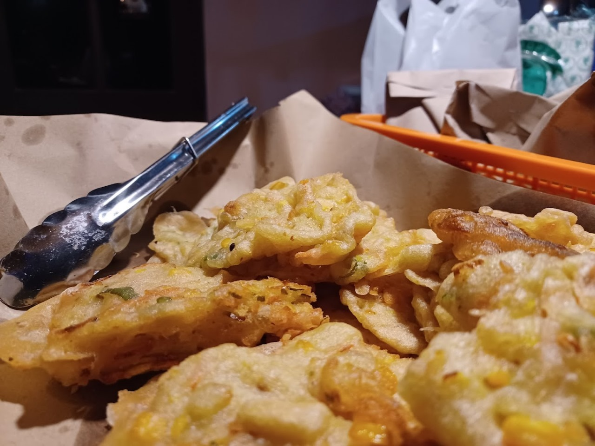
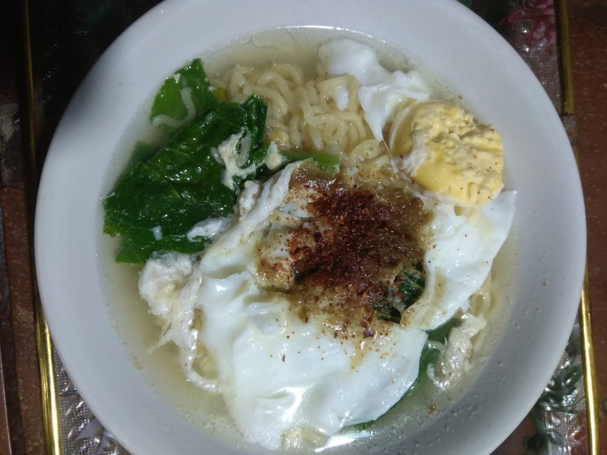

Menu Kami
Mendoan
Mie
Sate-satean

Kami menyediakan hidangan terbaik untuk Anda
Lihat Lebih BanyakKami adalah usaha Angkringan dengan pengalaman bertahun-tahun dalam menghadirkan Menu Yang Beragam.
kami menyediakan berbagai hidangan yang menggugah selera dan berbagai menu.
Angkringan Latar Omah adalah sebuah tempat makan sederhana yang menghadirkan suasana hangat khas Jawa, cocok untuk bersantai bersama keluarga dan teman. Mengusung konsep "angkringan di halaman rumah," tempat ini memberikan nuansa nostalgia dengan dekorasi tradisional.
Di Angkringan Latar Omah, kami percaya bahwa makanan bukan hanya soal rasa, tetapi juga tentang cerita dan kebersamaan. Oleh karena itu, kami menyajikan beragam menu khas angkringan, mulai dari nasi kucing, sate-satean, gorengan, mie, hingga wedang tradisional yang hangat. Semua dibuat dengan bahan-bahan pilihan dan resep autentik, untuk menghadirkan cita rasa yang familiar namun istimewa.
Selamat datang di Angkringan Latar Omah, tempat di mana cita rasa tradisional dan kehangatan khas Jawa berpadu dalam suasana sederhana yang penuh makna. Terinspirasi dari budaya angkringan yang menjadi ikon kebersamaan di tanah Jawa, kami hadir untuk memberikan pengalaman bersantap yang mengingatkan Anda pada suasana halaman rumah yang nyaman dan akrab.
Lebih dari 2 tahun usaha ini berjalan.
Menggunakan bahan berkualitas tinggi dan segar.
Pelayanan yang ramah dan cepat.